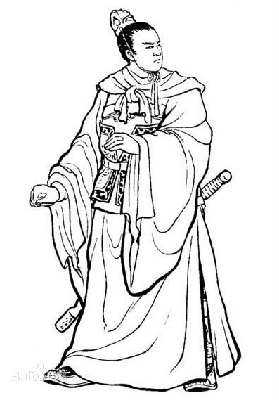

孙策：讨逆将军智略超世，用兵如神。
孙策
孙策（175年—200年5月5日 [1] ），字伯符，吴郡富春（今浙江杭州富阳区）人。破虏将军孙坚长子、吴大帝孙权长兄。 东汉末年割据江东一带的军阀，汉末群雄之一，孙吴政权的奠基者之一。 《三国演义》称其武勇犹如霸王项羽，绰号“小霸王”。
少年成名
汉灵帝中平元年（184年），孙策之父孙坚被朱儁推荐为佐军司马攻打黄巾军，孙策与家人留在寿春（今安徽省淮南市寿县）居住。 孙策十几岁时就在寿春结交名士，名声渐渐传播开了，舒县（今安徽庐江西南）人周瑜慕孙策之名，专程到寿春拜访。 周、孙两人同岁，且均少年有志，杰出通达。因而于寿春一见如故，便推诚相待。
中平六年（189年），孙坚前去讨伐董卓。周瑜便劝孙策携母亲弟弟移居舒县（今安徽省庐江县西南），孙策应允。 在舒县，孙策结交了很多社会上流人物，江、淮一带的名士都来投奔他。
投奔袁术
初平四年（193年），守孝结束后，孙策到寿春找袁术准备讨回之前其父孙坚的旧部建功立业及为父报仇。 袁术听其言语，察其举止，知道他能屈能伸，大有过人之处。但要马上将孙坚旧部还给他让他自立，自己又心有不甘。 于是，袁术便说：“我已任命你的舅父吴景为丹阳太守、你的堂兄孙贲为都尉。丹阳是出精兵的地方，你可去投奔他们，召集兵勇。” 因为徐州牧陶谦非常忌惮孙策，而现在孙策的舅父吴景任丹杨太守，于是孙策就带着母亲迁居曲阿，与吕范、孙河一起投靠吴景，并依赖吴景召募到了数百人。 后来讨伐泾县（今安徽省宣城市泾县）山贼祖郎，把祖郎打跑了。
兴平元年（194年），孙策带着数百人去投奔袁术。袁术这才将孙坚旧部数千人中的一千多人交还给孙策统领。 太傅马日磾持节安抚关东，在寿春以礼征召孙策，并表奏朝廷任命孙策为怀义校尉。袁术麾下的大将桥蕤、张勋等都倾心敬重孙策。 就连袁术也常叹息说：“如果我袁术有孙郎这样的儿子，死也可瞑目无憾了。” 孙策部下有一骑兵，犯罪后为逃避责罚，逃进了袁术的军营， 藏到马棚里面。孙策派人追捕，直冲袁术营中，将罪犯搜出，就地斩首。 事情结束后，孙策又前往袁术处赔礼请罪。袁术说：“兵士叛变，理当惩处，有什么可请罪的呢？”从此军中更加敬畏孙策。
创业江东
兴平元年（194年），汉献帝派刘繇担任扬州刺史，扬州过去的治所是寿春，而寿春已被袁术占领，刘繇便在孙策的舅父吴景和堂兄孙贲的协助下南渡长江， 在曲阿设立了治所。这次孙策攻打庐江，刘繇忧心忡忡，因为他知道，吴景、孙贲是袁术任命的，他们又是孙策的自己人，担心他们与袁术、孙策联手吞并自己， 于是就用武力逼赶他们，吴景和孙贲只好退往历阳（今安徽和县）。 [16] 刘繇派部下樊能、于麋驻扎在横江津，让张英驻扎在当利口，来与袁术对抗。 袁术则任用自己的老部下惠衢为扬州刺史，以吴景为督军中郎将，和孙贲一起率兵进击张英，却一连几年都未能攻克
吴郡都尉朱治是孙坚的老部下，过去曾任孙坚的校尉，太傅马日磾在寿春的时候，任命朱治为副官，后又被任为吴郡都尉。他发现袁术政德不立， 就劝说孙策趁机收取江东。于是孙策就去见袁术。孙策对袁术说：“我家旧日对江东人多有恩义，我愿带兵去帮助舅父征伐横江。 横江攻克之后，我还可在当地召募士卒，大概能召募三万人。那时，我再率领他们助您平定天下，谋成大业。”袁术知道孙策对自己不满， 但他认为，刘繇占据曲阿，王朗占据会稽，孙策未必能有什么作为，就答应了他的请求 ， 并表奏朝廷任命孙策为折冲校尉，代理殄寇将军，只给他配备一千多的士卒及相应的军需品，战马几十匹，宾客中愿意跟随者几百人。
建安元年（196年），孙策进攻会稽。 [24] 王朗败溃后投降，于是会稽平定。 占据会稽后，孙策将原有长吏全部更换，自己兼任会稽太守， 又以吴景为丹杨太守，以孙贲为豫章太守，分豫章另置庐陵郡，以孙贲弟弟孙辅为庐陵太守，朱治为吴郡太守。彭城人张昭、广陵人张纮、秦松、陈端等为谋士。 同年，孙策派遣奉正都尉刘由、五官掾高承拿着孙策的奏章拜谒许都朝廷，并向朝廷进贡礼物。
决裂袁术
建安二年（197年），袁术占有传国玉玺正式僭越称帝，孙策给袁术写信，劝其不可，袁术不听所劝，两人于是绝交不再有往来。 同年，曹操派议郎王誧携带汉献帝的诏书给孙策，任命他为骑都尉，袭父爵乌程侯，兼任会稽太守，并命他与吕布、陈瑀等一起讨伐袁术。 孙策觉得自己统领这么多兵马，骑都尉的职务有点低了，想得到个将军的封号。于是派人向王浦透露了这个意思，王浦当即以皇帝的名义宣布孙策权代明汉将军。 当时，陈瑀军驻海西（今江苏东海），孙策按诏书要求，整顿兵马，要去与吕布、陈瑀会面，谋划军机，参同形势。但他率军走到钱塘时，情况却发生了变化。 原来陈瑀想要乘机夺取孙策的地盘。他派人秘密渡江，拿着三十多个印信给丹杨、宣城、泾县、陵阳、始安、黟县、歙县等地的大帅祖郎、焦已及吴郡乌程严白虎等， 让他们作内应，等孙策的部队一开拔，马上攻取他的郡县。 孙策发现这一阴谋，大怒，派吕范、徐逸统兵直扑海西，大破陈瑀，俘获他的将士、妻儿等共四千多人。陈瑀往北逃奔袁绍
建安三年（198年），孙策派徐琨赶走袁术所派的丹阳太守袁胤，平定宣城以东各地，迎接刚从袁术处回来的吴景担任丹阳太守，之后孙策亲自进攻丹阳泾县以西。 他先进击陵阳（今安徽青阳县东南），擒获祖郎，又进击勇里（今安徽泾县西北），擒获自封丹阳太守的太史慈。孙策平定丹阳回师吴郡后，拜太史慈为折冲中郎将， 授祖郎为门下贼曹。 [31] 这时，袁术之前任命的周瑜为居巢长，鲁肃为东郡长，但二人知袁术难成大器，在孙策平定丹阳时相继弃官渡江来投奔孙策，孙策亲往迎接周瑜， 拜建威中郎将，当即给周瑜增兵二千人，马五十匹。又给周瑜鼓吹等军用乐队，兴建府院住处，所赠赐的东西在军中无人能比。 同年，孙策又向汉廷贡献礼物，规模是建安元年的两倍。汉廷任命他为讨逆将军，封为吴侯。。
一统江东
建安五年（200年）初，孙策大败黄祖后东进豫章，驻军椒丘（江西新建县北），对虞翻说：“华歆名闻于世，但绝非我的对手。 如果不早归附，将来金鼓一震，战局一开，生灵涂炭，在所难免。你先进城去，把我的意思说给他听。”虞翻领命进城，见到豫章太守华歆， 陈明利害，华歆举城投降。因刘繇病故于豫章，孙策顺便将刘繇的灵柩带回归葬，并且带回其遗孤刘基等诸子，这一举动受到了王朗的来信称赞。 孙策留中护军周瑜镇守巴丘，派遣太史慈为建昌都尉，治海昏，抵挡刘磐，使刘磐不敢侵扰。
这时袁绍的势力正强大，而孙策又吞并了江东，曹操已无力东顾，叹息说：“难以与他争锋了！”就打算对孙策实行安抚。 于是把弟弟的女儿许配给孙策的小弟孙匡，又为儿子曹彰迎娶孙贲的女儿， 用礼征召孙策的弟弟孙权、孙翊，并令扬州刺史严象举荐孙权为茂才。
遇刺身亡
建安五年（200年），曹操与袁绍在官渡对垒相持，孙策暗中盘算袭击许都，迎取汉献帝，便秘密整顿军队、部署将领。 当初，孙策杀死许贡。许贡的幼子与门客逃亡到江边。建安五年四月四日 [40] ，孙策在丹徒山中打猎。 他骑的是一匹快马，扈从骑兵被远远的甩在后面。这时忽然碰到三个人，这三人都是被孙策所杀的吴郡太守许贡的门客， 孙策问：“你们是什么人？”三人回答说：“我们是韩当的士兵，在这里射鹿。”孙策说：“韩当的士兵我全部认识，从没见过你们”。 说完向其中一个射箭，那个人随着弓弦的声音而倒下。余下二人非常恐慌当即弯弓搭箭，向孙策射来。孙策面颊中箭。这时， 后面的扈从骑兵寻找到孙策，将刺客全部杀死。 孙策伤势甚重，自知不久于人世，就请张昭等人，托以后事：“中原正在大乱之中， 凭我们吴、越的兵众，三江的险固，足以观其虎斗成败。你们要好好辅佐我弟弟！”又招呼孙权，将印绶交予他，对他说：“率领江东兵众，决战两阵之间， 横行争衡天下，你不如我；但举贤任能，使其各尽其心，用以保守江东，我不如你。”到夜间孙策便去世了，时年二十六岁。孙权登基称帝后，追谥孙策为“长沙桓王”。 为孙策立庙于建业朱雀桥南， 后来派太子孙和前去亲祭。